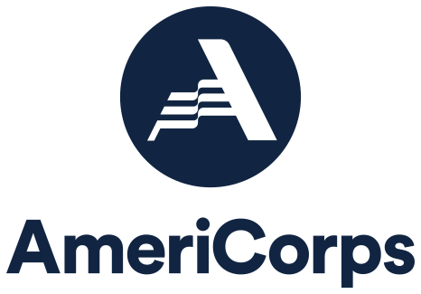

Work Experience
University of Central Arkansas
Assistant Director of Housing Operations
Conway, AR - July 2022-Present
- Streamlined communication with internal and external stakeholders of the university
- Developed strategic email and social media marketing campaigns to encourage information retention
- Increased department's Instagram reach by 3,300% in one calendar year
- Grew Instagram following by 33% in one calendar year through organic marketing techniques
- Represented the department during student and parent information panels, sessions, and events
 AmeriCorps
VISTA Leader
University of Central Arkansas, Conway, AR - Sep 2022 - Sep 2023
VISTA
City of Hope Outreach, Conway, AR - Sep 2021 - Sep 2022
- Recruited future AmeriCorps VISTAs through application & resumé assessment and interviews
- Assisted six AmeriCorps VISTA members with goal setting, personal & professional development
- Maintained professional relationships with area non-profit partners to increase sustainable growth
- Retained and analyzed records of VISTA members' volunteer recruitment and fundraising efforts
- Developed a community-based, collaborative employment program for homeless individuals
- Created an employee-readiness curriculum to build social skills necessary for the workplace
- Established and maintained relationships with businesses to encourage long-term partnerships
- Aided in gaining $550,000 in cash, in-kind, and monthly contributions to The CoHO Hope Village
- Designed marketing materials for physical and media-based distribution for stakeholder retention
 The CoHO Academy
The CoHO Academy
Administrative Assistant
Conway, AR - Oct 2022 - Mar 2023
- Interacted weekly with students aged 5 through 13 to promote positive relationships with adults
- Gathered and created marketing elements for community engagement and outreach purposes
- Designed weekly newsletters and social media posts to inform all stakeholders of current events
- Retained records of attendance and student performance to maintain proper grant standing
 Sam's Club
Sam's Club
Various Roles
Joplin, MO → Springdale, AR → Conway, AR (2015-2021)
- Provided daily direction to 60 associates on execution of company plans and strategic initiatives
- Managed facility operations by communicating and collaborating with associates
- Developed employees for promotion opportunities through identification of talent
- Reviewed resumés, conducted interviews, and initiated onboarding and training for new associates
- Evaluated daily employee conduct to ensure operational procedures were followed by all staff
- Maintained awareness of warehouse inventory and supply to ensure proper member service
- Advertised discounted and new products through the utilization of current social media trends
Love Your Melon
Social Media Manager
Missouri Southern State University - Aug 2017 - Dec 2019
- Designed content for various platforms to inform stakeholders of the organization's mission
- Grew social media following by over 40% in two years through targeted marketing strategies
- Developed community engagement ideas through group collaboration and input
- Increased social media engagement rates from 2.3% to 5.6% via organic marketing processes